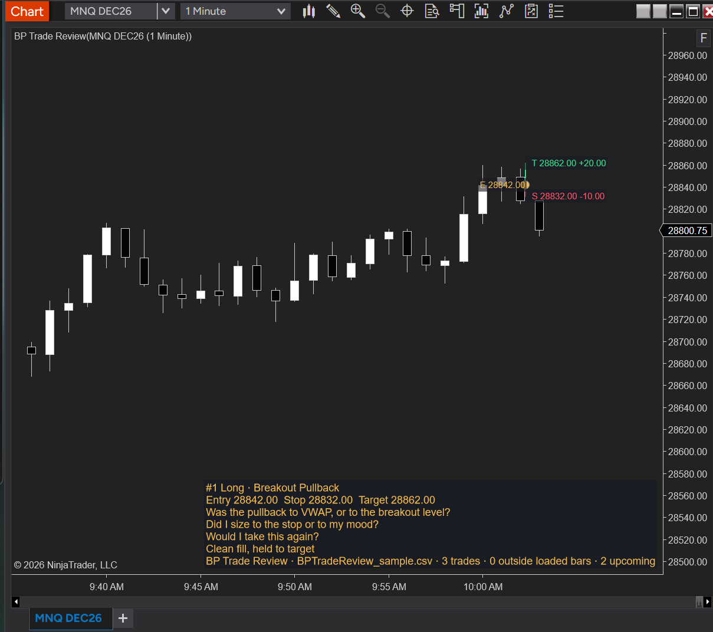
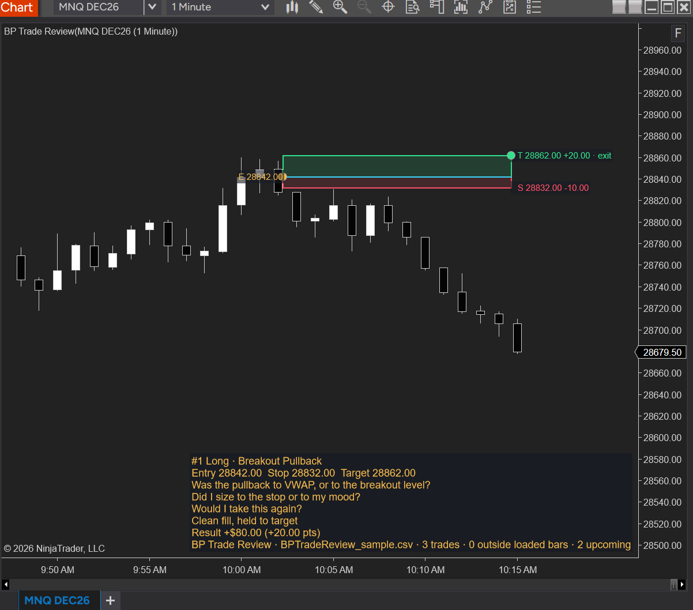
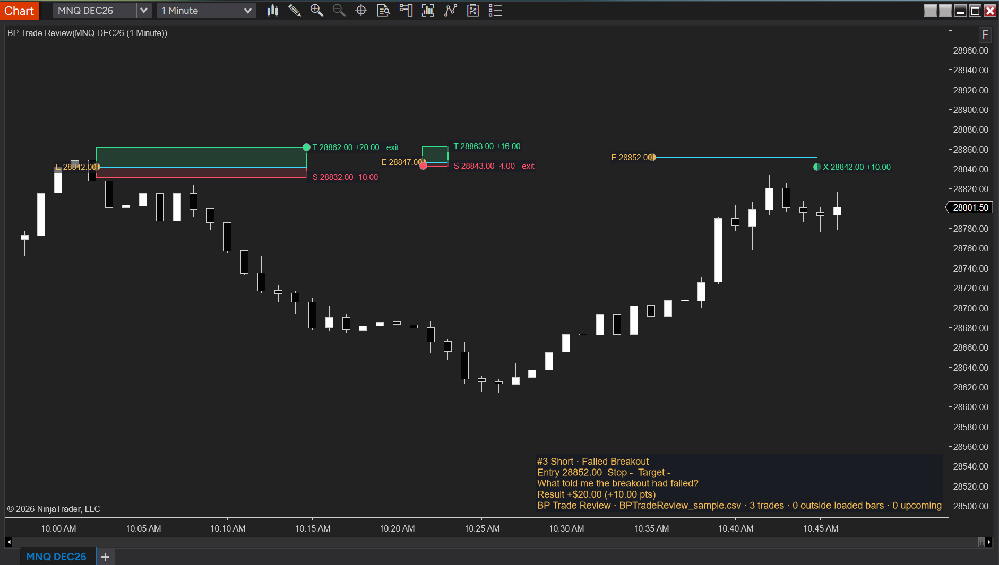

What it does
BP Trade Review reads a trades file and draws each trade on your chart with your own review questions. In Market Replay, the questions appear the moment the trade happens and the result only appears when the trade exits, so you can answer them before you know the outcome. On a normal chart the whole set plots at once, so you can see where losses cluster.
It never scores or judges your trades. The questions come from your file. BP Trade Review is free, needs no license key and works offline.
| Object | What it shows |
|---|---|
| Entry line | Cyan line at the entry price, from entry to exit |
| Stop box | Red box from entry to the planned stop. Not drawn when the stop is blank |
| Target box | Green box from entry to the planned target. Not drawn when the target is blank |
| Entry dot | Gold dot at the entry |
| Exit dot | Green for a winning trade, red for a losing one. Not drawn when result_pts is blank |
| Labels | E (entry price) at the left end of the line; S (stop), T (target) and X (exit) at the right end, with the distance in points. An exit at the stop, target or entry price is added to that label instead of a separate X |
| Panel | The most recent trade: number, side and setup; entry, stop and target; your questions and note; the result once the trade has exited; and a footer line with the file name and counts |
While a trade is open in replay, the line and boxes grow with each completed bar until the exit.

Requirements
- NinjaTrader 8 (tested on 8.1.8.4).
- Any instrument NinjaTrader can chart. The file says which instrument each trade belongs to; a chart only draws the trades for its own instrument.
- Market Replay data for the day you replay (see Reviewing a day in Market Replay).
- Windows 11 Smart App Control: must be Off. With it on, Windows blocks NinjaTrader from loading any custom add-on, BP Trade Review included. Turn it off in Windows Security → App & browser control → Smart App Control settings → Off. Note that BP Trade Review stops loading if you switch it back on later.
Install
- Download the BP Trade Review
.zipfile from the tools page on the Blueprint site. Don't unzip it. - In NinjaTrader's Control Center: Tools → Import → NinjaScript Add-On… → select the
.zip→ Open. Confirm when NinjaTrader reports the import succeeded. - Open a chart → right-click → Indicators → double-click BP Trade Review in the list → under 01. File, enter the full path to your trades file in Trade file → OK.
Quotes around the path are fine, so you can paste it straight from Windows Explorer's Copy as path.
Updating to a new version works the same way: import the new .zip, then remove BP Trade Review from your charts and add it again, because NinjaTrader keeps the old settings on any chart where it's already running.
Your trades file
There are two ways to get a file: export it from NinjaTrader, or write your own CSV. BP Trade Review recognises which one it is from the header row.
From NinjaTrader
- Control Center → New → Trade Performance.
- Choose the account and the dates → Generate.
- Open the Trades tab → right-click → Export. Save the file and enter its path in Trade file.
What to expect from an export:
- Scale-ins and scale-outs are combined into one position, per instrument and account. Its entry and exit prices are averages weighted by contracts, shown with two decimals, and the panel adds a line such as
2 entries · 1 exit · 3 contracts. - Stop and target are blank, because the export doesn't contain them. No stop or target boxes are drawn, and the panel shows
-for both. - The export has no questions, setup or note. To review with questions, write your own CSV.
- Times are used as they appear in the export, in NinjaTrader's time zone.
Write your own CSV
One trade per row, with this exact header row first:
id,instrument,entry_time,exit_time,side,entry_price,stop_price,target_price,qty,setup,result_pts,result_usd,q1,q2,q3,note| Column | What it holds | Blank allowed |
|---|---|---|
| id | Trade number or name, unique in the file | No |
| instrument | Root symbol, such as MNQ, not the contract (MNQ 12-26) | No |
| entry_time | Entry time with its UTC offset, such as 2026-10-30T10:02:15-04:00 | No |
| exit_time | Exit time, same format | No |
| side | Long or Short | No |
| entry_price | Entry price | No |
| stop_price | Planned stop at entry. Blank = no stop box | Yes |
| target_price | Planned target at entry. Blank = no target box | Yes |
| qty | Contracts, for your record | Yes |
| setup | Setup name, shown in the panel heading | Yes |
| result_pts | Points won (positive) or lost (negative). Sets the exit dot's price. Blank = no exit dot | Yes |
| result_usd | Dollars won or lost. Decides green or red; result_pts is used when this is blank | Yes |
| q1, q2, q3 | Your review questions, one per column | Yes |
| note | Free text, shown after the questions | Yes |
Rules:
- Times must include the UTC offset:
-04:00for US Eastern in summer,-05:00in winter. BP Trade Review converts each time to your chart's time zone, so the file works whatever time zone your PC uses. - Prices are plain numbers with a point as the decimal separator and no thousands separator:
28842.00. - Quoting: any field containing a comma, a double quote or a line break goes inside double quotes. A double quote inside a quoted field is written twice:
"Did I ""chase"" the breakout candle?". - Edit in a text editor such as Notepad, not Excel. Excel rewrites the times when it saves.
- Extra columns after
noteare ignored. A row that can't be read is skipped and counted in the footer.
Example with two trades — one with a stop and target, one without:
id,instrument,entry_time,exit_time,side,entry_price,stop_price,target_price,qty,setup,result_pts,result_usd,q1,q2,q3,note
1,MNQ,2026-10-30T10:02:15-04:00,2026-10-30T10:14:40-04:00,Long,28842.00,28832.00,28862.00,2,Breakout Pullback,20.00,80.00,"Was the pullback to VWAP, or to the breakout level?",Did I size to the stop or to my mood?,Would I take this again?,"Clean fill, held to target"
3,MNQ,2026-10-30T10:35:05-04:00,2026-10-30T10:44:50-04:00,Short,28852.00,,,1,Failed Breakout,10.00,20.00,What told me the breakout had failed?,,,Reviewing a day in Market Replay
- Download the replay data. With Playback disconnected and Enable market recording for playback off: Control Center → Tools → Historical Data → Get Market Replay data → choose the instrument and the day of your trades → download.
- Connect Playback: Control Center → Connections → Playback Connection.
- Open a chart of the instrument and add BP Trade Review with your file.
- In the Playback control, Go To a time before your first trade, then press Play.
At each entry an alert sounds and a row appears in the Alerts Log (BP Trade Review #1 Long at 28842.00). The entry line, boxes and panel appear with your questions; the result and exit dot stay hidden until the trade exits. Pause and read the questions before the outcome shows.
A trade whose entry is already past when Playback reaches it (for example after Go To jumps over it) is drawn without the alert.

Seeing all trades at once
Load the file on a normal chart (not connected to Playback) with enough Days to load to reach back to your first trade. Every trade on the chart plots at once, with its result.
- Labels show on the most recent trade only. Set Labels to All to label every trade.
- Trades that entered before the first loaded bar aren't drawn; the footer counts them as outside loaded bars. Increase Days to load.

Settings reference
The defaults work as they are; only Trade file needs filling in.
| Group | What it controls |
|---|---|
| 01. File | Trade file: full path to the CSV or NinjaTrader export. Use date filter (off): when on, only trades whose entry date falls between From date and To date are loaded. From date (90 days before you added the indicator) and To date (the day you added it) |
| 02. Display | Font size (12). Reveal (On Exit): On Exit shows the result and exit dot when the trade exits; Always shows the result from entry. Labels (Active): Active labels the most recent trade only, All labels every trade, Off shows none. Panel corner (Bottom right): also Top left, Top right, Bottom left. Top right sits under the chart's own top-right icon, and Top left runs into the data series label |
| 03. Alert | Alert on entry (on): sound and Alerts Log row when a trade's entry is reached in Playback or live data |
Messages
Messages appear in the panel footer and in the Output window (Control Center → New → NinjaScript Output).
The footer reads BP Trade Review · <file> · N trades · M outside loaded bars · K upcoming, plus · R rows skipped when rows were skipped.
| Message | What it means / what to do |
|---|---|
| N trades | Trades in the file for this chart's instrument (and date filter). 0 means none match: check the instrument column and the date filter |
| M outside loaded bars | Trades that entered before the first bar on the chart. Not drawn; the Output window lists their ids and times. Increase Days to load |
| K upcoming | Trades not reached yet. In replay this counts down as you play; on a normal chart it means trades later than the last bar |
| R rows skipped | Rows that couldn't be read: fewer than 16 columns, a blank id, an unreadable time, a side other than Long or Short, or a price or result that isn't a plain number. Fix the rows in a text editor |
| No trade file set | Enter the path in 01. File → Trade file |
| File not found | Check the path and the file name, including the extension |
| File empty | The file has no rows |
| Unrecognised header | The first row is neither the CSV header nor a NinjaTrader Trades export. The Output window shows the header it found. Copy the header from Write your own CSV exactly, or export again from the Trades tab |
| Load error: … | The file couldn't be read; the text after the colon says why. Check the file opens in Notepad |
| BPTR time zone: NT8 display offset … Windows=… | Printed every time the indicator loads: the time zone trades are converted to, and your Windows time zone. Copy this line into any support request |
| (fallback to Windows) | Added to the time zone line when NinjaTrader's time zone couldn't be read and Windows' was used. If trades land on the wrong bars, send the line to support |
| position id …: rows, entries, exits, qty | NinjaTrader export only: how the export rows were combined into each position |
| draw error / alert error on id … | Something failed for that trade. Send the line to support |
Troubleshooting
My trades are shifted by hours. You changed NinjaTrader's time zone (Control Center → Tools → Settings → General → Time zone) after the chart loaded. Right-click the chart → Reload All Historical Data. Playback can't reload, so choose NinjaTrader's time zone before you download Market Replay data.
It doesn't work on my Tick Replay chart. Tick Replay charts aren't supported. Use a chart with Tick Replay off.
A short trade shows no line, or appears all at once. When the entry and exit fall inside the same bar, the line and boxes are stretched to the next bar once it completes, so the trade has width. On a normal chart, a trade like that shows its entry and result together because the chart works bar by bar; in Market Replay the result still waits for the exit.
Two labels overlap. When the stop, target or exit are close to the entry, their labels sit close together at normal zoom. Drag the price axis to zoom in.
I updated and the new defaults didn't apply. NinjaTrader keeps the settings of indicators already on a chart. Remove BP Trade Review and add it again.
"An Application Control policy has blocked this file." Smart App Control is on. Turn it off (see Requirements), restart NinjaTrader, then import again.
Getting help
Use the support form at bptrade.co/support; it's the only support channel, and replies come within 2 business days.
Open the Output window (Control Center → New → NinjaScript Output), find the line starting BPTR time zone, and copy it into the form.